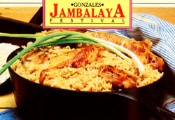

Food Festival
May/June 1986
by Alice M. Geffen and Carole Berglie
A few years ago, while smacking our lips at our favorite annual chicken barbecuegiven by the Cutchogue (New York) Fire Department-we began to think that there must be thousands of such local food celebrations and festivals all over the country. We decided to explore this premise . . . and proceeded to eat our way through the calendar and across America.
• Food festivals combine the excitement of a celebration with the fresh taste of local foods and the honesty of homemade preparations. In the era of potato flakes and imitation bacon bits, it's comforting to have the real thing.
• Festivals range in length from one day to two weeks, and they're ideal entertainment for whole families. There's always something special going on for children, but there are also events and activities for retired people, locals, tourists, singles, and teenagers. Many festivals have a midway, often set off to the side. Almost all have at least one stage, for concerts, contests, and award ceremonies. Starting in the 1970s, many festivals added a foot race, some of which are officially sanctioned, but all of which attract an astonishing number of runners. Some festivals are agricultural fairs, so they have judgings for the best-looking livestock or produce. Many have eating contests, which are usually embarrassing but always a lot of fun. Others have zany events like bed races or crazy costumes, and most have beauty pageants. We've also seen our share of tractor pulls, mud hops, and tug-of-wars.
• Food festivals are fun and joyous. They celebrate harvest and bounty. They are America letting loose for a party. We have tried to communicate some of that fun to you. We hope you'll go to lots of them and eat yourself silly and have a great time doing it.
• Jambalaya (JAM-bah-lie-ah) found its way into Creole-Cajun cookery in the late eighteenth century. It can be made with ham, chicken, sausage, fresh pork, shrimp, and oysters (all together or separately), to which shortening, rice, onions, garlic, pepper, and other seasonings, and sometimes tomatoes, are added. And, as anyone from East Ascension Parish will tell you, it's best made in Gonzales.
The atmosphere at Gonzales harks back to old-fashioned church fairs. In the nineteenth century, such fairs in southern Louisiana towns were large public gatherings. People brought their black iron pots from home, parishioners donated the ingredients, open wood fires were built, and jambalaya was made and served to the crowd. Later, politicians took over the custom and served jambalaya at rallies.
But people don't come to the Jambalaya Festival for politics. They come to listen and dance to Cajun music, to watch the cooking contest, and to eat the prizewinning jambalaya.
The contestants must supply their own 30-gallon cast-iron cooking pot (at one time, these pots were used for laundry). Just about all the entrants are men, mostly two-man teams sponsored by local companies or organizations. They take turns tending the pot and the wood fire below it, and when it is time to give their jambalaya a stir, they use a long-handled spatula to lift and sift the ingredients, being careful not to break or mash the rice kernels.
In contrast to the main cooking contest, the mini-jambalaya contest calls for somewhat different cooking skills. These cooks have to put a mighty effort into producing a zesty half cup of jambalaya, using a one-quart cast-iron pot and cooking it over a fire of kindling. The small fire gets very hot, and the contestants must make their brew along the curb of the main street as the crowds hang over them. Though originally begun as a novelty, this contest is also difficult to win, and competition is mighty stiff.
As we downed forkfuls of jambalaya, the joyous sounds of Cajun music came in through the wide doors of the cafeteria, and the happy, slightly discordant waltzes got people's feet tapping and hips swaying. We realized then why we love Louisiana's food festivals the most: They represent the traditional French love of good food, the Spanish love of good drink, and the Cajun love of their slogan, "Lais sez les bon temps rouler!"
The Gonzales Jambalaya Festival is held the second weekend in June. There is no admission charge. Food booths sell everything except jambalaya, which can only be had in the cafeteria. A plate (servings are very large) costs $3.50. Gonzales is located about 15 miles south of Baton Rouge, off U.S. 61. For more information, contact the Jambalaya Festival Association, P.O. Box 1243, Gonzales, LA 70737.
Imagine walking through an orchard on a sunny day, picking sweet cherries and popping them in your mouth. Sounds wonderful, doesn't it? On Michigan's Old Mission Peninsula, where there's an especially large concentration of cherry trees, you can make this dream come true. We didat the National Cherry Festival.
The best cherries around were either still in the orchard or part of the Very Cherry Luncheon, which is held on the Friday of this week-long festival. Here a visitor can enjoy a cherryfilled meal beginning with a cold cherry soup, followed by a variety of main courses, salads, and breads that contain cherries, and topped off with a selection or two from the three-tiered dessert table. This buffet table is the highlight of the luncheon, and with good reason. Heaped high from one end to the other, it is a cornucopia of old-fashioned cakes, pies, puddings, and cookies prepared by the growers' families-a cherry-lover's fantasy come true.
Other hits of the Cherry Festival include a pie-eating contest, open to children of all ages, and a pit-spitting competition, won recently by Rick "Pellet Gun" Krause, who sent a cherry stone flying 53 feet 7-1/2 inches.
Another feature of the festival is the cherry orchard tour, and this will get you among the trees so that you can start eating. The buses take you to a farm (a family operation) high on a hill overlooking both Grand and Little Traverse Bays, where you're given a tractor ride between rows of sweet cherry trees. We found this tour to be the most fun of the festival.
The National Cherry Festival is held in Traverse City the week following July 4. There are events, contests, and orchard tours daily. The Very Cherry Luncheon, on Friday, is $7.00 for adults and $4.50 for children.
Traverse City is located on Grand Traverse Bay, about 185 miles north of Lansing, off U.S. 31. Sleeping Bear Dunes National Lakeshore is nearby (25 miles) and is definitely worth a visit. For more information, write National Cherry Festival, P.O. Box 141, Traverse City, MI 49684.
An oak- and eucalyptus-shaded park the size of a small town is the setting for this very large food festival, a three-day event that is world famous for its singleminded devotion to the "scented pearl."
We eased into the fair and strolled among the booths, which were selling a host of items derived from, or based on, garlic. One stand featured Garlique, a fragrance made from garlic extract with rose scent added; the flier noted, "He may forget your name, but he'll know you've been there."
We moved along quickly to Gourmet Alley, a central area of major food booths run by the festival organizers. It is here, under a huge tent, that the large-scale cooking goes on and the best foods are offered. There are six specialties, and they rarely vary: marinated and stuffed mushrooms, pasta con pesto, pepper steak sandwich, scampi, calamari, and a vegetable stirfry with garlic bread.
Not far from Gourmet Alley, in a ring surrounding the demonstration area, are additional food booths. Here we sampled some other garlic offerings: garlots, garlic tamales, garlic-fried ravioli, escargot kebabs (three escargots and two mushrooms on a skewer, dripping with garlic butter), pickled garlic, garlic jelly, and-yes-garlic ice cream!
Why all the fuss about garlic in Gilroy? The Garlic Festival was begun in 1979 to boost Gilroy's image as a garlicproducing and processing area, and it has succeeded in bringing upward of 110,000 people here each year to discover countless uses for garlic. Will Rogers described Gilroy as "the only town in America where you can marinate a steak by hanging it on the clothesline," but these Gilroy folks have turned a liability into an asset. The air does have an intense smell that strains your patience, but this festival is one of the most sophisticated we've ever attended.
The Gilroy Garlic Festival is held July 25-27. An admission fee ($5 for adults, $1 for children, $2 for senior citizens) is charged and is good for the whole day.
Gilroy is located about 100 miles south of San Francisco, off U.S. 101; just follow your nose! For more information, contact the Gilroy Garlic Festival, P.O. Box 2311, Gilroy, CA 95020.
"We start the fire with cedar to get the heat up, then put on the alder to keep the coals." That's how the Sequim (pronounced skwim) Rotarians began describing their Indian-style salmon bake. They've been doing it this way since 1969, following methods developed by the Northwest Coast Indians centuries earlier.
A day or two before the bake, one of the Rotarians comes in and rototills a small patch of the lawn by the Grange's main building. Then some members of the group lay a bed of sand a foot thick, which will hold the heat when the fire gets going well. By seven o'clock the morning of the bake the men begin to assemble, and while the fire crew gets the coals going, the rest are busy preparing the 2,400 pounds of king (chinook) and silver (coho) salmon. First the fish are split open and the heads and tails removed. Then they are boned, butterflied, and carefully placed on long cedar stakes, tail end down. The stakes have been split in half almost from end to end, but the closed end serves as a hinge, and the slab of salmon is slipped between the two halves of the stake, then pinned to crosspieces so that the fish is spreadeagled on the stake. The fish are given a liberal dose of salt and cracked whole pepper, then set into the sandy bed alongside the fire. By this time the heat of the fire is a steady 150 degrees. As stake after stake of salmon is added, the rows of fish begin to look like a stockade surrounding the fire. Walking around this stockade, you can see the silver skins of the salmon glisten as they are slowly baked.
"You got to have the angle just right," we were told, "so that there's no dripping off the fins. If the fins drip, the fish is cooking too fast and the oils go out. Can't cook the fish too fast." The cooking crew sees to that-walking the fire, they call it-watching each one and making whatever adjustments seem necessary: restaking, turning, or moving the fish from the front row to the back. Periodically they check the heat of the fire by holding their hands over it, and after about two hours, when the salmon are nearly baked, the fish are turned so that their skin side faces the fire and the heat gives it a last-minute crispness.
This salmon bake is one of several held in the Pacific Northwest, and one of the few that are truly "Indian-style." It is a fitting way to prepare this king of fish, producing a moist, mildly smoky fish with a very crisp skin. The bake is held in August, when the fish that is served is ocean-caught. The salmon have only just begun to muster strength for the return to their freshwater birthplaces. Thus they are juicy and plump-perfect for baking.
Dinner is plentiful: cole slaw, beans, buttered bread, and of course the salmonabout a pound apiece; and we were asked if we wanted more! Everyone sits at long tables under sunny skies enjoying themselves while L.J.'s Reminiscers play old-time songs.
The Sequim Salmon Bake is held at Prairie Grange, Macleay Hall, Sequim, on the second Sunday in August. Tickets are $6 and are available at the gate. The bake is from noon to 6:00 P.M.
Sequim is on the Olympic Peninsula, about 17 miles east of Port Angeles on U.S. 101. For more information, write the Sequim Chamber of Commerce, P.O. Box 907, Sequim, WA 98382.
The International Zucchini Festival is probably the funniest food festival around. But then, zucchini can become a pretty funny vegetable. If you've grown your own, you know what we mean-especially at the end of the summer. By August, you've given zucchini away to all your friends, relatives, and neighbors. You've made zucchini pickles, zucchini hash, and zucchini ice cream.
And that's just when the International Zucchini Festival comes along-perfect timing. You and your zucchini can do things together. You can enter it into competitions such as the Farthest Traveled Zucchini or the Longest or Heaviest Zucchini. You can make something of your zucchini and enter it as the Best Zucchini Needlework or the Best Off-Color Zucchini. If you have more than one, there's the Best Matched Zucchini. And if you have only inspiration left, there's the Best Zucchini Essay.
If you have been able to grow more than just zucchini this summer, you could enter the Best Vegetable "Old Masters" Reproduction or the Most Peaceful Use of a Vegetable. Should your talents lie in the performing arts, open to you would be the Best Vegetable Song (but you must sing it before an appreciative audience).
Should your zucchini not feel up to entering an agricultural exhibit, perhaps you should consider the Motorized Vegetable competitions or the Flight of the Airborne Vegetables. Of course the Greased Zucchini Toss is a crowd pleaser, but your vegetable might not care for it.
For the athletic, there's a Vegetable Olympics, including a Pentathlon-five events performed with five different vegetables. The Zucchini Power Lifting competition calls upon the strong to lift crates filled with zucchini. For the Vegetable Diving Con test, entrants stand on the end of a diving board; they execute the dive by tossing the vegetable into the center of the pool. The dive is judged on accuracy, entry into the water, and form. There is also a Regatta, with prizes for both the zucchini boat that sinks the fastest and the one that stays afloat the longest.
We assembled the makings for lunch from the various food booths that were scattered about: icy-cold gazpacho, grilled lamburgers and lamb sausage heros served with sauteed zucchini and onions, and gingered spareribs and lamb kebabs with rice and zucchini. Dessert was a slice of zucchini bread spread with cream cheese. Food is purchased with Zukes and Gadzukes, the currency of the festival. And there are many signs warning, NO CUKES!
This zany festival takes place in Keene, New Hampshire, on the campus of Keene State College, on August 23. There is a $3 admission ($1 for children); Zukes (25e) and Gadzukes ($1) are on sale and are used to purchase food, crafts, balloons, face painting, and so on.
Keene is in the southwestern corner of the state, about 90 miles northwest of Boston, off Route 101. For information, contact the International Zucchini Festival, P.O. Box 128, Harrisville, NH 03450; 603/827-3033.
The road to Lebanon cuts across the knobland of central Kentucky, to the county named for General Francis Marion, the Swamp Fox of the Revolutionary War. On a late-September morning, the fields glisten from an early frost, and in the tobacco barns the drying leaves hang like bats in a cave. The air is heady as the road nears the bourbon distilleries. Warehouses filled with barrels of aging bourbon resemble prisons-tall, straightsided, metalclad buildings with bars on the windows and chain link fences around the perimeters.
Sour mash bourbon and tobacco are Kentucky traditions. So is real country ham. Marion County celebrates its ham tradition with a glorious two-day festival featuring a "pigasus" parade; pig calling, pipe smoking, and tobacco spitting contests; an auction of the champion ham; a 10 km "pokey pig" run; country music; crafts exhibits; and a country ham breakfast that rivals the best. The streets of downtown Lebanon are cordoned off, and tables are set up in front of City Hall for the breakfast. And the crowds eat. Five hundred volunteers serve fried apples, scrambled eggs, country ham with red-eye gravy, sliced tomatoes, and biscuits to hungry guests.
If your only experience with ham has been a tasteless, brine-cured, boiled ham, you're in for a real surprise. These somewhat saltier hams are dry-cured with a salt rub for six weeks, then rinsed and rubbed with sugar and smoked for a few hours over hickory chips. They then are aged for from six months to two years.
If you need a little diversion between ham biscuits, there's the chance to tour the Maker's Mark distillery, a few miles away. This is the only distillery in the United States granted National Historic Landmark status, and even if you aren't a bourbon fan the tour is well worth the trip. (There are no samples or sales at the distillery; it's against the law.) Marion County Ham Days are the last weekend of September. Tickets for the breakfast cost $4.50.
Lebanon, Kentucky, is about 60 miles southwest of Lexington, off U.S. 68. For more information, contact the Lebanon/Marion County Chamber of Commerce, Lebanon, KY 40033: 512/ 692-2661.
The Indians had many uses for the native American cranberry. In addi tion to eating the berries, they used the juice for a red dye when weaving, and a cranberry poultice was fairly common for treating arrow wounds. They shared this crisp, red fruit with the early English settlers, and cranberries have been a part of Thanksgiving Day feasts ever since 1621.
The cranberry is a low-growing vine that thrives in peat and sand. At harvest time (late September) the bogs are often flooded. The ripe berries are then knocked off the vines (by the harvesters) so that they float to the surface, creating vast crimson patches all over the flooded area. Dry harvesting, done with the old-fashioned scoop (or rake), is another method but less favored.
The Massachusetts Cranberry Festival, begun in 1948, is held in South Carver each September. This is the heart of cranberry country, with over 3,000 acres of cranberry bogs. The site is the Edaville Railroad Park, a family amusement center with a cranberry bog in the middle. There is a narrowgauge railroad that encircles the bog, and a highlight of the festival is a 45-minute ride on the old-fashioned train. The railroad was originally constructed to serve the bogs: hauling sand out to them in the winter and bringing the harvest back in the fall.
Other events at the festival include the woodsmen's competition, a sheeptoshawl spinning and weaving contest, a puppet theater, and a spinning bee. Under the Cranberry Tent you can watch cranberry-screening and cranberry-cooking demonstrations (with samples for the tasting) and refresh yourself with glasses of free cranberry juice.
Along the walkways that encircle the central cranberry bog, one can find other, delicious diversions: a chicken barbecue served with cranberry sauce (what else?), a local bake sale featuring cranberry cakes-some of them past winners in the cooking contest, and all of them irresistibleand a stand selling cranberry sherbet. There is also an arts and crafts sale.
The Cranberry Festival (and 4-H Fair) is held the last two weekends in September at the Edaville Railroad in South Carver, Massachusetts. Admission to the grounds (which includes a train ride) is $5 for adults, $3 for children.
South Carver is about 15 miles southwest of Plymouth, on Route 58. For more information, contact the Massachusetts Cranberry Festival, P.O. Box 7, South Carver, MA 02366.
"Mullet? Where I come from even the cats won't eat it." This is what one man from Florida told us. Of course, in some parts of the state the shoreline is muddy, and so the mullet, which are bottom feeders, taste a lot like what they eat. Mullet are considered trash fish in a lot of places, but along the Boggy Bayou on the Florida panhandle, they're eaten for breakfast, lunch, and dinner.
The Florida mullet is the migratory Mugil cephalus, commonly called the black, silver, or striped mullet because of the long black lines that run the length of its body. It has a tapered nose that broadens out to a flat, wide head. When it feeds along a shallow bottom, its tail points skyward. The mullet is a fish that can make a rapid switch from salt water to fresh water by making a chemical change in its body that science has yet to understand. It leaves the Gulf of Mexico and swims up the shallow bayous each year to spawn.
During the third weekend in October, the friendly people of Niceville hold a festival to show the rest of the world just how tasty mullet can be. The Boggy Bayou Boys-a local sportsmen's club-fix the mullet in two very appealing ways. The fried is the most popular, and it's easy to know why. They head the fish, split them open, and remove the bones. Then they butterfly the fillets, dust them faintly with a mixture of flour and cornmeal, and fry them in vegetable oil. The fish emerges virtually greaseless and very crisp, especially around the edges. It's served either with just hush puppies, or on a platter with cheese grits, beans, and hush puppies.
The smoked mullet has also been headed, cleaned, and boned. It's then sprinkled with lemon juice, Worcester shire sauce, and melted butter. T! fish is given a "heat smoke"-mo a combination of smoking an cooking-for an hour to an hour an a half. When the fish starts to chang color, the cooks baste it with more the lemon juice mixture. The mull; finishes up as a very moist, ligt smoked fish-not at all salty, because it hasn't been cured first.
Although thousands of people a tend this festival each year, a comfort able, small-town feeling prevails. Gia live oaks shade the crafts booths and food stalls, and there are large roun tables placed conveniently near the food booths. On stage, there is a ban up performance by the Golden Eagle the high school band-so large it mus include the entire school population The other entertainment include country music, clogging, jazz, an, rock. This is a festival without at: rides, but with the usual beaut pageant, foot race, and evening dance
The Boggy Bayou Mullet Festival held the third weekend in October in Niceville, Florida. A fried mullet plat runs about $3 (no admission charge
Niceville is about 60 miles east Pensacola; take Route 85 south or 1-10. For more information, write call Boggy Bayou Mullet Festival, Inc. P.O. Box 231, Niceville, FL 3257 904/678-3099.
EDITORS NOTE: This article is ex cerpted from the book Food Festiva by Alice M. Geffen and Carole Bergh, copyright © 1986 by Alice M. Geffe and Carole Berglie and reprinted wit the permission of Pantheon Books, diuision of Random House, Inc. TI book is available for $9.95 plus $l. 0 shipping from Random House, 40 Hahn Rd., Westminster, MD 21157.
1 large chicken, cut up
4 large onions, chopped
3 cloves garlic, chopped fine
3 cups water
2 cups long-grain rice, rinsed
1/2 cup chopped scallion greens salt and pepper to taste
1/2 teaspoon cayenne pepper
In a large cast-iron pot, brown the chicken over high heat in its own fat until it turns dark, dark brown-about 1 hour. Add the onions and garlic and fry until they turn brown, too-about 10 minutes more. Add the water and simmer the chicken until tender, about 30 minutes. Add the remaining ingredients and stir lightly. Bring the liquid to a boil and cook over medium heat until most of the water is gone and the rice starts to puff. Stir the mixture carefully, lower the heat, and cover to cook slowly until done, about 30 minutes more. When done, season with more cayenne pepper if desired. Serves 6.
Per serving: 319 cal., 38 g pro., 54 g carbo., 5 g fat, 377 mg sodium. USRDA: 20% iron, 51% vit. B6.
2 tablespoons vegetable oil
1 medium onion, chopped
18 cloves (about 1 large head) garlic, peeled and chopped
1 pound chopped beef
4 tomatoes, peeled, seeded, and chopped pinch cumin salt and pepper to taste
8 spring roll wrappers vegetable oil for deep frying 112 cup grated Parmesan cheese
Heat the oil in a heavy skillet; add the onion and garlic and cook until wilted. Then add the meat and fry until it changes color. Add the tomatoes and cook the mixture until it is dry, about 10 minutes. Add cumin, salt, and pepper. Let the mixture cool.
Separate the spring roll wrappers and put 1 heaping tablespoon filling on each roll along the diagonal. Fold one corner over the filling, then fold over the shorter two ends and roll the wrapper until the remaining end piece is wrapped around the filling. Moisten the end with a little water to make it stick.
Heat the oil to 375°F and deep fry the garlots, 2 at a time, for 5 to 7 minutes. Drain on paper towels, then sprinkle with grated Parmesan cheese and serve hot. Makes 8 garlots.
*We used easier-to-find wonton wrappers, with excellent results.
Per serving: 344 cal., 20 g pro., 15 g carbo., 30 g fat, 5 mg cholesterol, 255 mg sodium. USRDA: 16% iron, 15% vit. A, 27% vit. C, 15% calcium.
1 small zucchini, cut into 1/4 inch cubes (about 1-1/2 cups)
1 small onion, minced
1 green pepper, minced
1 clove garlic, minced
2 medium tomatoes, peeled, seeded, and diced
1-1/2 cups chicken broth, skimmed
2 cups tomato juice
2 tablespoons lemon juice
1/2 teaspoon Tabasco sauce
1 teaspoon salt
2 tablespoons olive oil
Place the vegetables and chicken broth in a blender. Spin for 1 minute, so that the ingredients are minutely chopped but not pureed. Then pour the mixture into a large bowl and add the remaining ingredients. Stir, then chill for a couple of hours. Serve ice cold. Serves 4 to 6. Per 1/6 recipe: 86 cal., 3 g pro., 10 g carbo., 5 g fat, 376 mg sodium. USRDA: 32°70 vit. A, 80% vit. C.
1 stick butter or margarine
1 cup sugar
2 large eggs
1 teaspoon baking soda
1 teaspoon baking powder
2 cups all-purpose flour
1/2 teaspoon salt
1 cup sour cream
1 teaspoon almond extract
1 can (8 oz) whole cranberry sauce
1/2 cup chopped nuts Glaze:
2/3 cup confectioners' sugar
2 tablespoons warm water
1/2 teaspoon almond extract
Cream together the butter or margarine and sugar. Add the eggs one at a time and mix well. Sift together the dry ingredients. Add the creamed mixture alternately with the sour cream, then stir in the almond extract. Spoon half the batter into a greased 10" tube pan, spread with half the cranberry sauce, and sprinkle with half the chopped nuts; repeat. Bake for 40 to 55 minutes at 350°F, or until a cake tester comes out clean. Let cool. While cake cools, prepare the glaze. Beat the sugar with the water until smooth, then flavor with extract. Spread glaze on cake and let set before serving. Serves 8.
Per serving: 523 cal., 6 g pro., 72 g carbo., 25 g fat, 103 mg cholesterol, 487 mg sodium. USRDA: 18% vit. A, 17% calcium.
|
|
|
|
|
|
|
|
 |
|
|
|
|
|
|
|
 |
|
|
|
|
|
|